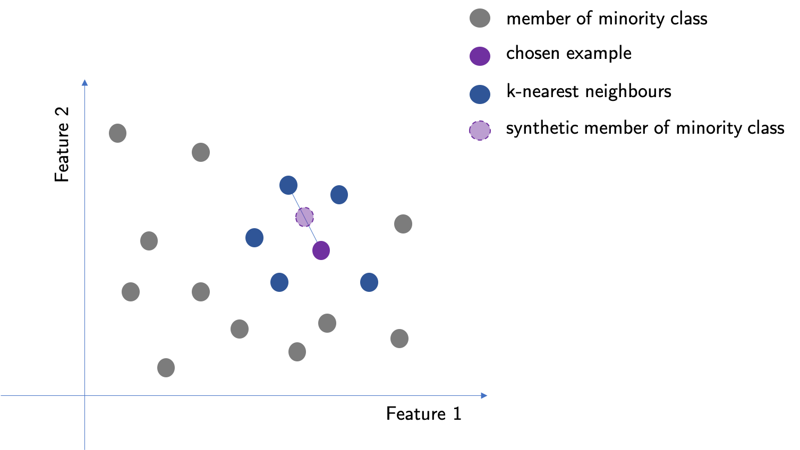

Working with imbalanced datasets
When working on a Hansard Parliamentary speeches dataset I have encountered an interesting problem: a big imbalance of classes in my dataset. One of the tests that I set out to look at in the dataset was to try to determine the gender of an MP that gave a speech from its text. The only information that I have given to my learner was a text of a speech and a label identifying the gender. After cross-validation few models I noticed that they all were was performing incredibly well, they could guess the gender of the speaker with very high, 87% score. I was very dubious about this score and looked at my dataset in more detail. I have noticed a large discrepancy in the classes. The dataset looks at the speeches between 1979 and 2018, and only about 14% of them were given by female MPs. The percentage is even smaller when we take into account the ratio for speeches given by male and female MPs year on year. In 1979, the earliest date in the dataset, only 5% of speeches were given by female MPs. Working with such a skewed dataset meant that a simple prediction that all speeches are given by male MPs was resulting in a high score, but was having almost no predictive power. Because this dataset is so large, with more than 2 million speeches included, I solved it by resampling the dataset, that is I have reduced the number of speeches in my training and test set given by male NPs such that the data was balanced. Because of the fact that I set out to perform other things in this dataset, I have settled on that solution but later on, it started nagging on me whether I could've dealt with the problem differently and what my under-sampling meant for my predictor. Because this is a very interesting problem and is present in many Data Science applications I have decided to commit this small article to deal with imbalanced datasets. First I will go through techniques used to address the imbalance and then I will use them to train some models and compare the metrics.
Why is that important?
Very frequently in professional setting we have imbalanced datasets, examples being:
- Medical diagnostics
- Financial fraud
- Default on loans
- Rare event prediction
Check that data truly is imbalanced
When working with imbalanced datasets I always sure that the imbalance is not due to biased sampling or measurement errors. For example, a wrong sampling technique might misrepresent the actual proportions of the population. The way the data was obtained can also introduce an imbalance. A wrong collecting technique or mislabelling can show proportions of the data different to the one in reality.
Change your metrics
Accuracy as a metric is not the best choice when it comes to imbalanced datasets. For example, as mentioned in the parliamentary speeches example the accuracy of the classifier will be 86% if all speeches are simply classified as being given by the male MPs. This has no predictive power and metrics like precision, recall and F1 score should be used instead to assess how good the model is in predicting the true labels for the sets. Cohen's cappa is another good metric, and it is designed especially to account for the imbalance in the classes.
Collect more data
One of the first things we can think of is to collect more data to balance the classes. Unfortunately, I cannot go back in time to ask for more speeches from between the years 1979 - 2018. I can add the speeches from 2019 but unfortunately, that does not solve the problem of having an imbalance in data if I want to consider only speeches from a given year in the past.
Resample your dataset
There are many ways in which I can resample the dataset, but they all can be divided into over-sampling and under-sampling.
In over-sampling, the data from the underrepresented class is copied such that the imbalance is made smaller. Random oversampling can lead the classifier to believe that trends present in the data are stronger than in the initial dataset. This can cause overfitting and high variance.
SMOTE, which stands for Synthetic Minority Over-sampling Technique, is a method for creating data for over-sampling. Using SMOTE improves overfitting and high variance over random oversampling. In this method, the closest k-neighbours are chosen for a member of a minority class. For that point, SMOTE chooses one of the neighbours and creates a new point in the middle of the line drawn between them in the feature space.

Cluster-based over-sampling is a relatively new method for oversampling that builds on the ideas in the SMOTE method. In this technique, K-nearest Neighbours is used to dividing the whole data into clusters. The clusters will still be imbalanced so the SMOTE technique is used to create additional members of the minority class in each cluster to match the one with the most of the minority class. Because the clusters can be different in size a fraction of data (20-30%) is taken from each cluster to create a final dataset on which a classifier will be trained.
Under-sampling is a technique where the elements of the overrepresented class are deleted to improve the balance. This can lead to loss of valuable information from the dataset. Usually performs better than random over-sampling.
Use bagging
Try algorithms that performs well on an imbalanced data
Decision trees are quite well suited to deal with imbalanced datasets and are very fast to train. Overall they are not very precise and are very sensitive to changes within the data. They are building blocks of many complex approaches to the analysis of imbalanced datasets so we are going to discuss them here. A decision tree working on a dataset splits it according to some feature into smaller datasets called leaves. The conjunction of features that the dataset is split on is called a branch. Each split is quantified with a metric. For example, decision trees in Sklearn Python package can either use Gini impurity or information gain. Hence in sklearn decision trees will split the data into leaves to either decrease Gini impurity or increase information gain. Then, each of the leaves is split again along new branches. This splitting can go on forever and the data can be categorised into leaves that fit only one particular data point. This provides no information hence if the tree is too large it can be prone to overfitting.
Random forest is a technique that consists of creating a number of decision trees. The trees are trained on a sample of the dataset and then the findings of various trees are compared. The mode, which is the most common classification for a given data point is chosen as its value. This technique is not very computationally expensive and tends to be very powerful. The speed of the technique comes from the fact that relatively small trees are used (weak learners). Because of that, the overfitting of the data is less of a problem.
Boosting approaches
Boosting approaches use a number of weak learners sequentially, converting them to a strong learner. In this method, an n+1 learner is trained on an output of an nth learner and improves it in some way. In here we will discuss the two most common types of boosting.
In adaptive boosting (AdaBoost) subsequent weak learners work with more focus on the examples misassigned by the previous learner. In this algorithm, all the data points given to the first learner start with the same weight. Then, before being passed on to the next learner, the examples that were wrongly assigned are given more weight. More of the next learner's focus is therefore placed on these examples. Very frequently the weak learners in AdaBoost are decision trees with a single split, so-called stumps. To use the method efficiently one has to make sure that the weak classifiers have enough data to train on and that the training errors of the weak errors do not increase too fast and overwhelm the algorithm.
Gradient boosting trains an n +1 learner on the residual of the previous learner. Residual is the difference between the actual value of a datapoint and the value obtained by a learner. Hence the learners in a sequence works to correct the errors of its predecessor. One can imagine a gradient boosting method as a functional gradient descent, in which each learner is chosen in such a way to point in the direction of the negative gradient. Gradient descent can be additionally regularized to decrease overfitting. Gradient boosting methods are computationally expensive, hence for an increased speed XGBoosting is used (eXtreme Gradient Boosting)
Try penalized models
Some algorithms can be adapted internally to perform better on the imbalanced dataset. The algorithms are modified for example by adding weights to datapoints to add a cost to a learning process or by changing the decision threshold to be in favour of the minority class. These approaches are usually difficult to implement. Additionally, these changes can bring unforeseen consequences to the model.